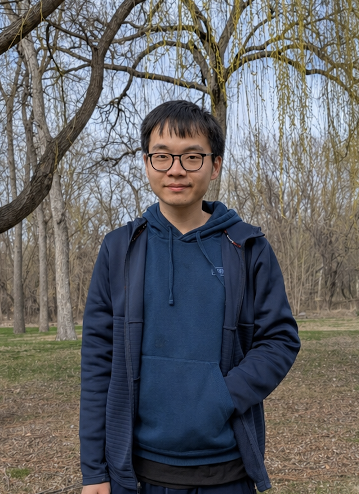
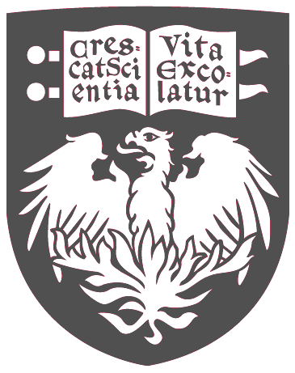

About Me

Hello, I'm Chenfeng Li—welcome to my page!
I am a Data Scientist and Machine Learning Engineer with a strong foundation in statistics and applied mathematics, specializing in end-to-end data systems that bridge machine learning, data engineering, and real-world deployment.
I am currently an intern at Packet Digital in North Dakota, where I have been working since October 2025. The company specializes in battery and drone technologies. My job duty across various fields, including construction supervision, SCADA data management, and most importantly, involving in multiple machine learning projects across various team. My most recent project is to participate in a project Polli, a drone flight planning and aerial photos analytics software, to finetune a thistle detection model with high resolution aerial photos. I deployed an annotation software Label Studio in AWS to allow external biologists create or modify annotation on the new data, and then preprocess the annotated image and finetune the model. Besides, I also managed to built an early-stage battery degradation prediction model for a newly developed cell R&D lab in the company.
I earned a Master of Science in Statistics from the University of Chicago in June 2024, following a Bachelor of Science in Mathematics from The Chinese University of Hong Kong (CUHK). My interest in Data Science and Machine Learning began in 2017 after AlphaGo’s breakthrough, and since then I have built a strong foundation in statistical modeling and machine learning, including deep neural networks and transformer models. My master’s thesis, completed under Professor Schein, examined the relationship between media bias and facial expressions of politicians from news images. Previously I worked as a Data Scientist at Synergistic IT (2023-2025), where I developed client-facing data solutions across multiple industries
Contact Information
Email: cfli@chenfengli.com
LinkedIn: Chenfeng LI
Github: Chenfeng LI

UChicago Profile (archived): Chenfeng LI